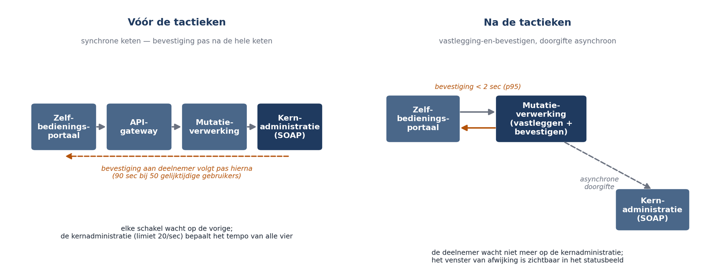

Deel 6 — Kwaliteitstactieken
Deelnemersreader
Cursus Softwarearchitectuur · Niveau 1 (CPSA-F) · Deel 6 van 10
Positionering
Voorbereiding op iSAQB® CPSA-F. Geen vervanging van het officiële curriculum en examenmateriaal van het iSAQB. Technologieneutraal; arc42 + C4 als referentienotatie, Structurizr als referentietool. Zelfstandig leesbaar; kruisverwijzingen naar de Ductus-cursus Business & Enterprise Architectuur zijn aangeduid met ↗ EA.
Leerdoelen van dit deel
Na dit deel kunt u:
- uitleggen wat een kwaliteitstactiek is en hoe die zich verhoudt tot een patroon en een stijl;
- de tactiekcategorieën voor prestatie, beschikbaarheid, beveiliging en onderhoudbaarheid benoemen en toepassen;
- voor een gegeven kwaliteitsscenario een passende tactiek kiezen en de prijs ervan benoemen;
- uitleggen waarom een tactiek zonder meetpunt geen tactiek is maar een hoop;
- een meetplan opstellen dat vóór de helft van het project uitsluitsel geeft;
- bevinding B5 uit de post-mortem Mutatie 1.0 sluiten.
Dekking CPSA-F: dit deel dekt de leerdoelen over het realiseren van kwaliteitseisen door middel van architectuurmaatregelen, en verbindt hoofdstuk 2 (kwaliteitseisen) met hoofdstuk 5 (evaluatie, deel 9).
6.1 Van keuze naar realisatie
De afgelopen drie delen hebben iets mogelijk gemaakt; ze hebben niets gerealiseerd.
De hexagonale opzet met een asynchrone doorgifte naar de kernadministratie maakt het mogelijk dat een bevestiging binnen twee seconden komt. Of dat ook gebeurt, hangt af van een reeks concrete maatregelen: wat wordt er in het kritieke pad gedaan, wat erbuiten, wat wordt vooraf berekend, wat wordt bewaard, hoeveel gelijktijdige verwerking is er.
Die maatregelen heten tactieken. Een tactiek is een gerichte ontwerpbeslissing die één kwaliteitsattribuut beïnvloedt. Anders dan een stijl bepaalt zij niet de grondvorm, en anders dan een patroon lost zij niet een structureel deelprobleem op — zij verlegt een specifieke eigenschap in een specifieke richting, tegen een specifieke prijs.
| Reikwijdte | Voorbeeld | |
|---|---|---|
| Stijl | de grondvorm van het systeem | hexagonaal |
| Patroon | een terugkerend deelprobleem | outbox, circuit breaker |
| Tactiek | één kwaliteitsattribuut, gericht | werk buiten het kritieke pad verplaatsen |
De regel die dit hele deel draagt: elke tactiek hoort bij een scenario, en elk scenario hoort bij een meetpunt. Een tactiek zonder scenario is versiering; een scenario zonder meetpunt is een hoop.
6.2 Prestatietactieken
Prestatie is de som van twee dingen: hoeveel werk er moet gebeuren, en hoeveel daarvan tegelijk kan. De tactieken vallen in drie categorieën.
Vraag beperken
- Werk buiten het kritieke pad verplaatsen. Dit is voor QS-1 de beslissende tactiek. De bevestiging volgt na vastlegging van de gebeurtenis in het platform; doorgifte naar de kernadministratie gebeurt daarna. Prijs: een venster waarin platform en kernadministratie verschillen — de trade-off uit deel 2.
- Aanroepfrequentie verlagen. In Mutatie 1.0 bevroegen vier services elk afzonderlijk de deelnemersgegevens tijdens één schermopbouw. Eén keer ophalen en doorgeven scheelt driekwart van het werk zonder enige structuurwijziging. Dit is de goedkoopste tactiek die er is en zij wordt het vaakst overgeslagen, omdat zij niet interessant klinkt.
- Toegang begrenzen. Een limiet op gelijktijdige verzoeken per gebruiker of per werkgever. Prijs: bij overschrijding wordt iemand geweigerd — dat moet ontworpen zijn, niet toevallig gebeuren.
Middelen beter benutten
- Resultaten bewaren. Een berekening of opgehaald gegeven hergebruiken. De vraag is nooit of u bewaart maar hoe lang en wanneer u het weggooit. Sprint 4 van Mutatie 1.0 koos 24 uur zonder doorbreking; vijf minuten met doorbreking bij een mutatie op dezelfde deelnemer was dezelfde tactiek met een acceptabele prijs.
- Vooraf berekenen. Een leesmodel dat de gegevens voor het behandelaarsscherm al in de juiste vorm heeft staan. Prijs: het model moet bijgewerkt worden, en u moet weten welke kopie geldt.
- Gelijktijdigheid vergroten. Meer verwerking tegelijk. Werkt alleen als er geen gedeelde flessenhals achter zit — en bij Meridiaan zit die er wel: de limiet van 20 aanroepen per seconde. Meer gelijktijdigheid tegen een harde limiet levert alleen langere wachtrijen op.
Middelen toevoegen
Meer capaciteit is een geldige tactiek en vaak de goedkoopste op korte termijn. Zij verbergt echter structurele problemen: de synchrone keten van vier schakels uit Mutatie 1.0 wordt met dubbele capaciteit iets sneller en blijft principieel fout.
Vuistregel: pas deze categorie pas toe nadat u de eerste twee hebt overwogen, en leg vast wat u ermee verbergt.

6.3 Beschikbaarheidstactieken
Beschikbaarheid kent drie fasen, en de meeste ontwerpen besteden alle aandacht aan de eerste.
Fouten ontdekken
Ping/echo, hartslag, tijdslimieten, en het bewaken van uitblijvende gebeurtenissen. Dat laatste wordt vergeten: als een mutatie na drie uur nog niet is doorgegeven, is er iets mis — maar niemand krijgt een foutmelding, want er is niets misgegaan. Er is alleen niets gebeurd. Stille stilstand is de moeilijkst te ontdekken storing en de meest voorkomende.
Fouten opvangen
- Opnieuw proberen met oplopende wachttijd. Alleen veilig als de bewerking idempotent is — anders verwerkt u een mutatie twee keer.
- Onderbreker (circuit breaker). Na herhaald falen stopt u met proberen en faalt u snel, in plaats van elke aanroep de volle tijdslimiet te laten wachten. Zonder onderbreker sleept een trage afhankelijkheid uw eigen systeem mee.
- Werk vasthouden. Voor QS-2 de kern: een aanvaarde mutatie wordt vastgelegd en verzonden zodra het kan. Dit is het outbox-patroon en het is de reden dat een storing bij de kernadministratie de behandelaar niet blokkeert.
- Terugvallen op verminderde dienst. Bij een onbereikbare postcodedienst: aannemen met een markering “adres niet geverifieerd” in plaats van weigeren. Prijs: er ontstaat een categorie gegevens die later nagelopen moet worden, en dat proces moet bestaan.
Fouten herstellen
Automatisch herstarten, opnieuw aanbieden van vastgehouden werk, en — het meest vergeten — het opruimen van de gevolgen. Na herstel staan er mutaties in de wacht, is de volgorde mogelijk gewijzigd, en zijn er deelnemers die een bevestiging kregen die nog niet is doorgewerkt.
Randvoorwaarde uit deel 2 telt hier zwaar: de beheerafdeling heeft 's nachts geen bezetting. Elke tactiek die menselijke tussenkomst vereist, werkt tussen 18:00 en 08:00 niet. Dat maakt automatisch herstel geen luxe maar een eis.
6.4 Beveiligingstactieken
Drie categorieën, met dezelfde structuur als beschikbaarheid.
Weerstaan. Authenticatie, autorisatie, gegevensbescherming, en — voor deze casus het belangrijkst — functiescheiding. Uit deel 2 bleek dat de security officer geen generieke zorg had maar één specifieke: dat een medewerker een adres wijzigt en vervolgens zelf de uitkeringsopdracht goedkeurt. Dat is geen inlogprobleem maar een ontwerpregel over wie welke opeenvolgende handelingen mag verrichten. Zulke regels horen in het domein, niet in een beveiligingslaag eromheen.
Ontdekken. Onregelmatigheden signaleren: veel mutaties op één deelnemer, adreswijzigingen naar een adres dat al bij een medewerker bekend is, handelingen buiten kantooruren. Prijs: valse meldingen, en iemand moet ze beoordelen.
Reageren en herstellen. Toegang intrekken, handelingen terugdraaien, en aantonen wat er gebeurd is. Dat laatste is QS-4 en het is de reden dat de gebeurtenisopslag onveranderlijk moet zijn: een audittrail die door de applicatie gewijzigd kan worden, bewijst niets.
Let op de wisselwerking met bruikbaarheid. Elke controle is een drempel. QS-5 (een deelnemer van 70+ voltooit een adreswijziging zonder hulp) staat op gespannen voet met extra verificatiestappen. Die trade-off hoort expliciet vastgelegd, met de vraag: hoeveel fraude accepteren we om hoeveel mensen zelfstandig te laten werken? Dat is een bestuurlijke vraag, geen technische — de architect stelt hem, de opdrachtgever beantwoordt hem.
6.5 Onderhoudbaarheidstactieken
De tactieken hier zijn grotendeels de principes uit deel 3, nu als gerichte maatregel:
- Verantwoordelijkheden scheiden — één reden om te veranderen per module.
- Afhankelijkheden beperken — richting bewaken, cycli vermijden.
- Variatiepunten aanbrengen — parametriseren wat regelmatig verschilt. Voor QS-3 concreet: als een mutatiesoort bestaat uit een set vereiste gegevens, een set controles en een statusstroom, dan is een nieuwe soort toevoegen configuratie plus specifieke logica in plaats van een nieuw bouwwerk.
- Uitstellen van bindingstijd — een keuze naar later verplaatsen (configuratie in plaats van code). Prijs: uitgestelde binding maakt het systeem flexibeler en moeilijker te doorgronden, want het gedrag staat niet meer in de code.
De valkuil bij dit attribuut is dat alles klinkt als een verbetering. Het onderscheid: een variatiepunt op iets dat werkelijk varieert, is winst; een variatiepunt op iets dat nooit verandert, is de abstractie zonder beslissing uit deel 3. De toets blijft dezelfde: welke concrete wijziging wordt hierdoor goedkoper?
6.6 Tactieken botsen
| Tactiek | Verbetert | Verslechtert |
|---|---|---|
| Vooraf berekend leesmodel | prestatie | onderhoudbaarheid, consistentie |
| Werk vasthouden bij storing | beschikbaarheid | consistentie zichtbaarheid |
| Functiescheiding afdwingen | beveiliging | bruikbaarheid, doorlooptijd bij kleine bezetting |
| Variatiepunten aanbrengen | wijzigbaarheid | begrijpelijkheid |
| Meer capaciteit | prestatie | verbergt structurele oorzaken |
Deze tabel is niet volledig en hoeft dat niet te zijn. Het punt is de gewoonte: bij elke tactiek noteert u wat er slechter van wordt. Wie dat niet kan, heeft de tactiek niet begrepen.
6.7 Meten: het echte antwoord op B5
Bevinding B5 luidde: prestatie en beschikbaarheid zijn pas in de laatste testweek gemeten. De belastingtest vond plaats in week 58 van 60. Toen was de oorzaak structureel en dus niet meer op te lossen.
De oorzaak van B5 is B2: wat geen norm heeft, wordt niet gemeten. Maar met een norm alléén komt u er niet — er moet ook een moment en een eigenaar zijn.
Het meetplan
Voor elk drijverscenario legt u vast:
- Wat meten we — de responsmaat uit het scenario, met percentiel.
- Waarmee — welke opstelling, welke belasting, welke gegevensomvang. Meten op een lege database met één gebruiker meet niets.
- Wanneer voor het eerst — en dit is het beslissende punt.
- Wie beoordeelt — met de bevoegdheid om te zeggen dat het niet goed genoeg is.
- Wat als het niet haalt — welke tactiek staat klaar, en wat kost die.
De regel voor het eerste meetmoment
Elk drijverscenario wordt gemeten zodra het architectuurrisico meetbaar is, en uiterlijk voor een derde van de looptijd.
Voor QS-1 betekent dat: niet wachten tot het systeem af is. Zodra het kritieke pad van een adresmutatie bestaat — desnoods met halve functionaliteit — wordt hij belast met vijftig gelijktijdige gebruikers. Dat kan in week acht.
In Mutatie 1.0 was het kritieke pad in week twaalf aanwezig. Een belastingtest daar had de synchrone keten van vier schakels blootgelegd op een moment dat de structuur nog te wijzigen was. Het verschil tussen week twaalf en week 58 is het verschil tussen een ontwerpcorrectie en een gepauzeerd programma.
Wat u meet als het systeem er nog niet is
Drie beproefde vormen:
- Een prototype van het risicovolle pad. Alleen het kritieke pad, met echte latenties en de echte limiet van 20 aanroepen per seconde.
- Een rekensom. Vaak volstaat dat. Vier schakels × 200 ms + een gelimiteerd koppelvlak bij vijftig gelijktijdige gebruikers levert een uitkomst die u zonder code kunt zien. Deel 4 liet dat zien bij de batch: 4.000 ÷ 20 = 200 seconden. Een rekensom van dertig seconden had in Mutatie 1.0 een jaar bespaard.
- Een gerichte proef bij de leverancier. De limiet van 20 per seconde was met één telefoongesprek te achterhalen geweest.
↗ EA — Deze meetdiscipline is de systeemversie van wat de EA-cursus op programmaniveau behandelt: risico’s toetsen op het moment dat correctie nog goedkoop is, niet bij oplevering.
6.8 De tactieken voor Mutatie 2.0
| Scenario | Tactiek | Prijs | Eerste meting |
|---|---|---|---|
| QS-1 bevestiging < 2 sec | Bevestigen na vastlegging; doorgifte asynchroon; keten inkorten tot één ophaalactie | Venster van afwijking, zichtbaar te maken | Week 8, prototype kritiek pad, 50 gelijktijdige gebruikers |
| QS-2 doorwerken bij storing | Werk vasthouden (outbox), idempotente doorgifte, onderbreker, automatisch hervatten | Afstemmingsmechanisme nodig; extra beheerbeeld | Week 10, storing forceren in acceptatie |
| QS-3 nieuwe soort in 10 dagen | Mutatiesoort als variatiepunt: vereiste gegevens, controles, statusstroom | Meer indirectie; ongewoon voor nieuwe ontwikkelaars | Week 16, een echte extra soort bouwen en de doorlooptijd klokken |
| QS-4 7 jaar reconstrueerbaar | Onveranderlijke gebeurtenisopslag als bron | Opslaggroei; leesmodel nodig | Week 12, reconstructie van een testdossier door iemand die het niet gebouwd heeft |
De meting bij QS-3 verdient toelichting: wijzigbaarheid meet u niet met een metriek maar met een proef. Bouw een extra mutatiesoort en klok hoe lang het duurt. Dat is de enige meting die het scenario werkelijk toetst, en zij is bovendien nuttig werk.
De meting bij QS-4 idem: laat iemand die het systeem niet gebouwd heeft een dossier reconstrueren. Als dat lukt binnen een werkdag, voldoet u. Als het alleen lukt met hulp van de bouwer, hebt u B6 in de kiem.
Samenvatting
- Een tactiek is een gerichte ontwerpbeslissing die één kwaliteitsattribuut beïnvloedt, tegen een prijs. Stijlen maken kwaliteit mogelijk; tactieken realiseren haar.
- Prestatietactieken: vraag beperken, middelen beter benutten, middelen toevoegen — in die volgorde overwegen. De goedkoopste tactiek (minder aanroepen) wordt het vaakst overgeslagen.
- Beschikbaarheid kent drie fasen: ontdekken, opvangen, herstellen. Stille stilstand is de moeilijkst ontdekbare storing. Zonder nachtbezetting is automatisch herstel een eis, geen luxe.
- Beveiliging in deze casus draait om functiescheiding, en die hoort in het domein. Elke controle is een drempel: de afweging met bruikbaarheid is bestuurlijk, niet technisch.
- Onderhoudbaarheidstactieken zijn de principes uit deel 3 als gerichte maatregel. Een variatiepunt op iets dat nooit varieert, is de abstractie zonder beslissing.
- Bij elke tactiek noteert u wat er slechter van wordt.
- B5 sluit niet met tactieken maar met een meetplan: wat, waarmee, wanneer voor het eerst, wie beoordeelt, en wat als het niet haalt. Elk drijverscenario wordt uiterlijk voor een derde van de looptijd gemeten.
- Wijzigbaarheid en aantoonbaarheid meet u met een proef, niet met een metriek.
Kernbegrippen
Tactiek — gerichte ontwerpbeslissing die één kwaliteitsattribuut beïnvloedt.
Kritiek pad — de reeks bewerkingen die moet zijn afgerond voordat de gebruiker antwoord krijgt.
Onderbreker (circuit breaker) — mechanisme dat na herhaald falen stopt met aanroepen en snel faalt.
Outbox — het vastleggen van te verzenden werk in dezelfde transactie als de gegevenswijziging.
Idempotentie — een bewerking veilig kunnen herhalen.
Stille stilstand — een storing waarbij niets faalt maar ook niets gebeurt.
Variatiepunt — een bewust aangebrachte plek waar gedrag kan verschillen zonder codewijziging.
Meetplan — de vastlegging per drijverscenario van wat, waarmee, wanneer, door wie en met welk alternatief er wordt gemeten.
Verder lezen
- iSAQB, Curriculum CPSA-Foundation Level — hoofdstuk 4 en 5.
- Bass, Clements & Kazman, Software Architecture in Practice — de tactiekhoofdstukken per kwaliteitsattribuut; dit is de standaardbron.
- Nygard, Release It! — praktisch over beschikbaarheidstactieken en de manieren waarop systemen in productie omvallen.
- Ford, Parsons e.a., Building Evolutionary Architectures — over meten als doorlopende praktijk; wordt uitgewerkt in niveau 2, deel 17.
Ductus B.V. · Cursus Softwarearchitectuur · Niveau 1, deel 6 · Deelnemersreader